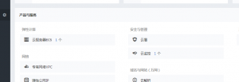

本来打算使用python的flask web框架来搭建我的个人博客网站
但是根据python的学习成本和我的时间不成正比所以先不考虑
先使用简单的wordpress来搭建
对于像大多数的人（初学者）来说，脑子里想的肯定是在自己的电脑上搭建自己的网站，但是在国内（也不知道国外啥状况。。）你要是不购买宽带运营商提供的专线的话，就凭家用宽带很难让所有的用户看到你的网站
一是因为动态IP，家用宽带每次拨号，运营商给你分配一个内网ip映射到人家的给你分配的公网ip。这个可以拨打运营商的服务账号要求更改ip为公网ip，也能成功，我试过一次，各自转接到什么机房，然后还要给接电话的人解释一下什么是公网IP，然后他再找工程师来解决
二是因为专线问题，假如你是联通宽带用户，那么你搭建的网站，其他例如电信，移动用户访问则会很慢，影响体验。
所有推荐使用现在流行的云主机
我使用的是阿里云ECS云主机，学生优惠99一年基本配置
进入正题：
首先登陆阿里云-进入管理控制台 可以看到你的实例
{kind=link}
点击云 服务器ECS —–点击左侧 实例
这时候可以看到你的主机的一些信息了（包括系统，运行状态等）

点击 更多 -停止 来你的主机（假如原先的系统中的数据需要保存，可在在快照中创建你之前的系统盘的快照，方便回滚）
然后选择更换系统盘
这是填写你的验证码什么的。
然后进入选择系统盘系统的页面在镜像市场中选择WordPress博客平台（Centos 64位）
这是一个集成了
- WordPress博客平台程序
- phpmyadmin管理平台
和一些优化（优化网络参数优化、关闭非必要的系统服务。针对apache运行模式以及并发，php.ini禁止查看php版本，调整上传下载附件大小到50M）
十分方便
到这里你在管理控制台就可以看到你的主机正在启动中
使用Xshell远程连接（SSH）你的云主机
输入 vi default.pass

就可以查看到系统设置的 mysql和FTP 的账号密码
然后来创建一个你的数据库
浏览器输入 你的域名或者IP地址/phpmyadmin/
例如：139.129.132..218/phpmyadmin/
进入下面这个页面
输入刚刚得到的mysql账号和密码并登录
然后点击数据库-新建数据库-输入数据库名-点击创建
然后我们就等到了一个专为wordpress的数据库
此时浏览器直接访问你的域名或者你的主机IP地址。
将会跳转到wordpress设置页面
点击创建配置文件
输入刚刚创建的数据库名，mysql账号密码后点击提交
这时，wordpress傻瓜式安装已经完成，简直简单的不行不行的。